TÀI LIỆU NỘI BỘ — Cao su Huy Anh · không phát hành ra ngoài công ty
Huy Anh ERP · Kho nguyên liệu
Hướng dẫn dùng module Hàng chèn
Dành cho QS tại xưởng, QC, thủ kho và Ban Giám đốc. Hàng chèn là hàng lỗi, hàng dính kim loại, hàng chuẩn hoặc SBR mua ngoài được đưa vào máy để chạy lại hay nâng chỉ số. Mỗi pallet đưa vào dây chuyền là một lần chèn, có phiếu, có ảnh, có ba chữ ký.
Điện thoại: huyanhrubber.vn/m/kho/chenMáy tính: Kho nguyên liệu → Hàng chènẢnh chụp từ hệ thống thật 10–18/11/2026
3Trả cuối cadùng hết: không cân · còn dư: cân 1 lần · ký khai báo
4QC duyệtsoát số và ảnh
5Thủ kho nhậnkho chèn trừ, sổ ca tự điền
6Kết thúc lệnhtổng kết + mail BGĐ
Mỗi phiếu cân mấy lần?— chọn pallet trong Sổ pallet thì chỉ cân 1 hoặc 2 lần, không bao giờ cân pallet rỗng
Trường hợp
Lúc lấy
Lúc trả cuối ca
Tổng
Có pallet · dùng hết
cân 1 lần cả pallet + hàng, máy trừ bì pallet
bấm Dùng hết, không cân
1 lần
Có pallet · còn dư
cân 1 lần như trên
cân 1 lần cả pallet + hàng còn, máy trừ bì
2 lần
Chèn băng tải
không cân — gõ số bành, máy nhân kg mỗi bành
gõ số bành còn, hoặc Dùng hết
0 lần
Không chọn pallet (hàng cân rời, đường cũ)
cân tổng 1 lần
cân hàng trả + pallet, rồi cân pallet rỗng để khai bì (dùng hết thì bỏ cân hàng trả)
2–3 lần
Muốn chỉ cân 1–2 lần: lúc lấy luôn chạm chọn pallet (H1, H2, EJ, H3, H4). Số kg của từng pallet đã có sẵn trong Sổ pallet nên máy tự trừ.
1 · Mở app và trang chính
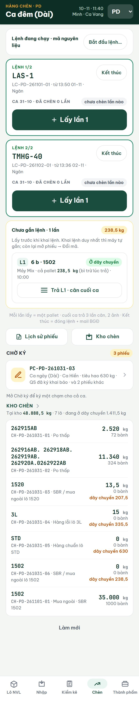
cuộn trong khung để xem hết màn
Trên điện thoại vào huyanhrubber.vn, đăng nhập, mở menu Kho nguyên liệu → Hàng chèn. Máy tự chuyển sang bản điện thoại. Có thể gõ thẳng huyanhrubber.vn/m/kho/chen. Thanh dưới có 5 tab: Lô NVL · Nhập · Kiểm kê · Chèn · Thành phẩm.
Nên thêm vào màn hình chính để mở như app: iPhone bấm Chia sẻ → Thêm vào MH chính; Android bấm ⋮ → Thêm vào màn hình chính.
Trang chính đọc từ trên xuống:
Đầu trang: nhà máy, ca hiện tại (tự nhận theo chấm công hoặc giờ), tên bạn, tổ trưởng. Ô PD ▾ đổi nhà máy.
Lệnh đang chạy · mã nguyên liệu: nút Bắt đầu lệnh… để khai mã đang chạy (mục 3).
Thẻ mỗi lệnh (viền xanh): mã lệnh, số lần đã chèn, ba ô số Đã lấy / Dây chuyền / Tiêu hao, danh sách từng lần L1, L2… với nút Trả Ln · dùng hết hay còn dư (phiếu không pallet: Trả Ln · cân cuối ca), nút + Lấy lần n và nút Kết thúc.
Chưa gắn lệnh (viền vàng): lần lấy trước khi khai lệnh. Khai đúng một lệnh thì máy tự gắn; nhiều lệnh thì mở phiếu → Đổi mã.
Lịch sử phiếu và Kho chèn: hai nút đi tới mục 8 và 7.
Chờ ký: số phiếu đang chờ chữ ký của bạn, chạm để vào mục 6.
Kho chèn tóm tắt: tồn từng lô, số bành, phần đang ở dây chuyền (chữ cam).
2 · Ai làm gì: ba bước ký
Bước 1 · QS khai báoNhập lô chèn, lấy đầu ca, trả cuối ca, ký khai báo; cũng bắt đầu / kết thúc lệnh, sửa cân lúc lấy, hủy phiếu lấy nhầm. Đang phân công (Phong Điền, từ 18/11/2026): Đặng Thị Lụa, Đỗ Thị Hồng Linh, Trần Thị Tươi, Võ Thị Kim Ngân. Ai không có tên sẽ thấy "chưa được phân công khai báo (QS)" và không lấy được.
Bước 2 · QC duyệtKiểm số lấy, trả, tiêu hao và ảnh rồi duyệt. Đang phân công (mọi nhà máy, từ 30/10/2026): Lê Thành Nhân, Lê Thị Lệ Trinh.
Bước 3 · Thủ kho nhậnNhận cuối: kho chèn trừ tiêu hao, sổ ca ép bành tự điền dòng CHÈN; ghi Sổ pallet. Chưa phân công ai nên máy dùng luật cũ: thủ kho kho nguyên liệu và Ban Giám đốc nhận được. Ban Giám đốc cấp cao làm được mọi bước.
Phân công làm một lần trên máy tính: Hàng chèn → tab Phân công (mục 10). Chỉ Ban Giám đốc thêm hoặc thu người.
Ai làm được việc nào— nút không có quyền sẽ không bấm được; ai cũng xem được số liệu
Việc
QS (bước 1)
QC (bước 2)
Thủ kho (bước 3)
Lấy hàng chèn, sửa cân lúc lấy, trả cuối ca, hủy phiếu lấy nhầm
Ban Giám đốc (cấp cao) làm được mọi việc. Một bước đã có tên thì người ngoài danh sách không làm được ở bất kỳ nhà máy nào; bước chưa có ai mới dùng luật cũ. Vì vậy khi mở hàng chèn ở Tân Lâm hay Lào, phải thêm người của nơi đó vào bước 1 (chọn đúng nhà máy) trước khi dùng.
Trạng thái một phiếu chèn
Đã lấy · đang ở dây chuyền→Đã trả · chờ ký→QS đã ký khai báo→QC đã duyệt→Thủ kho đã nhận(hoặc Đã hủy khi lấy nhầm)
3 · Đầu ca: khai lệnh đang chạy
Ai làm:QS hoặc thủ kho.
Một lệnh chạy là một đợt chạy máy gồm một hay nhiều mã nguyên liệu, ví dụ "KHMN-15 + 17" chạy chung trong lúc "TMHG-39" chèn bể Slap. Khai một lần, không chọn lại trên từng phiếu.
Trang chính, thẻ Lệnh đang chạy → bấm Bắt đầu lệnh….
Chạm một hay nhiều mã (mã sinh lúc thủ kho nhận phiếu cân vào kho ở tab Nhập, xem phần ngay dưới) → bấm Bắt đầu lệnh: ….
Đang có lệnh khác chạy thì máy hỏi một lần: Thay thế (kết thúc lệnh cũ), Chạy song song (lệnh riêng) hoặc Gộp vào … (thêm mã vào lệnh đang chạy).
Từ đó phiếu ca, phiếu chèn và lô thành phẩm tự gắn lệnh. Lệnh chạy nhiều ngày, nhiều ca vẫn là một thẻ; xong thì bấm Kết thúc (mục 9).
Chạy nhiều lệnh song song thì lúc lấy phải chạm chọn lệnh pallet này chèn vào. Lệnh gộp nhiều mã tính tiêu hao cho cả lệnh, không tách từng mã.
Mã nguyên liệu khai ở đâu tab Nhập · thủ kho
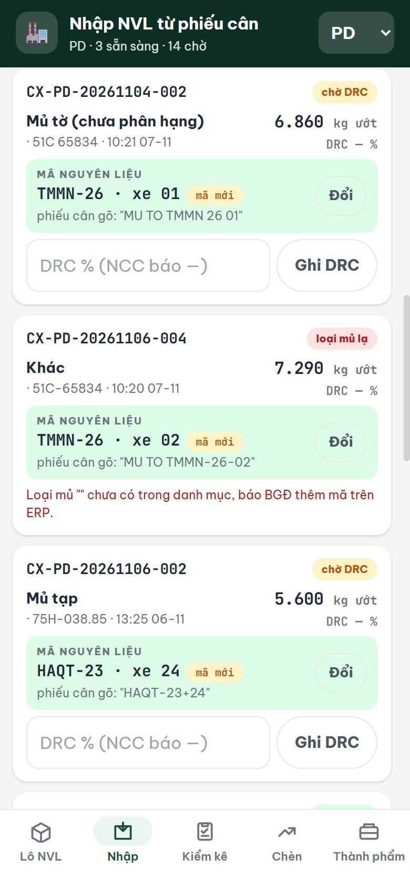
cuộn trong khung để xem hết màn
Mã nguyên liệu (TMHG-15, TMMN-26, HAQT-23…) không khai ở trang Hàng chèn. Nó sinh ra lúc thủ kho nhận phiếu cân vào kho ở tab Nhập (huyanhrubber.vn/m/kho/nhap). Mỗi phiếu cân chờ nhập có một ô Mã nguyên liệu:
Máy đọc sẵn mã từ phiếu cân. Người cân gõ gì ở ô mã lô trên trạm cân, máy đọc lại và chuẩn hoá: gõ "MU TO TMMN 26 01" thành TMMN-26 · xe 01, gõ nhầm TMGH-31 thành TMHG-31. Nhãn mã mới nghĩa là mã này chưa có trong kho, nhận phiếu là tạo luôn. Dòng nhỏ "phiếu cân gõ" giữ nguyên chữ gốc để đối chiếu.
Phiếu không có mã (ô đỏ "Chưa có mã · phải chọn"): bấm Chọn mã rồi chọn một trong ba cách ở hình dưới.
Phiếu sẵn sàng thì bấm Chọn mã rồi nhận. Phiếu chờ DRC phải ghi DRC trước. Phiếu loại mủ lạ thì báo Ban Giám đốc thêm loại mủ trên ERP rồi mới nhận được.
Nhận xong, mã hiện trong ô chọn Bắt đầu lệnh… ở trang Hàng chèn (mục 3). Sai mã thì bấm Đổi trước khi nhận, hoặc gán lại ở tab Lô NVL sau khi nhận.
Không có mã thì không nhập kho được. Tiền tố (TMHG, TMMN, HAQT, LAS…) là chữ trạm cân gõ, máy không tự đặt: muốn thống nhất cách đặt tên thì quy định cho người cân.
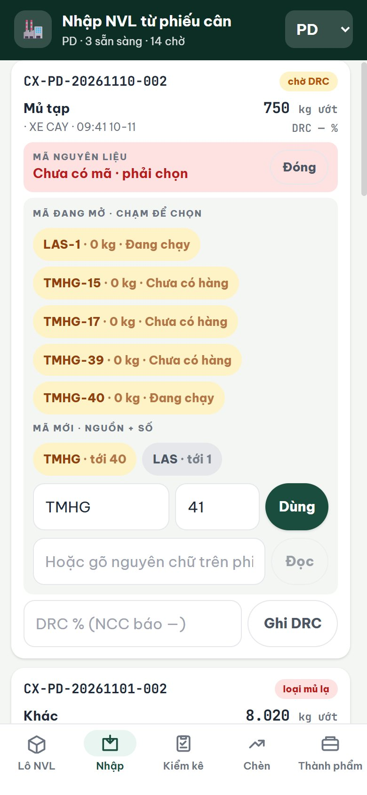
Hộp Chọn mã có ba cách, dùng một trong ba:
Mã đang mở · chạm để chọn: mỗi viên là một mã đã có trong kho, kèm số kg và trạng thái (Chưa có hàng, Sẵn sàng, Đang chạy). Xe này về cùng đợt với mã nào thì chạm mã đó.
Mã mới · nguồn + số: chạm viên nguồn (máy ghi số lớn nhất đã dùng, ví dụ "TMHG · tới 40"), máy điền sẵn số kế tiếp vào ô Số (41), sửa nếu cần rồi bấm Dùng. Mã mới là nguồn-số, ví dụ TMHG-41.
Gõ nguyên chữ trên phiếu (SBR-1502, TMMN 25 07…) rồi bấm Đọc: máy tự đọc ra mã, dùng khi phiếu giấy ghi cách khác.
Tạo mã trước khi hàng về: tab Lô NVL, ô "Tạo mã trước khi hàng về". Trên máy tính: Kho nguyên liệu → Nhập (/wms/nvl/nhap), hộp Nhập kho cũng có ô mã bắt buộc.
4 · Sổ pallet và lấy hàng chèn mỗi pallet một lần, nút "Lấy lần n" trên thẻ lệnh
Ai làm: lấy hàng: QS · ghi Sổ pallet: thủ kho hoặc Ban Giám đốc · xem sổ: mọi người.
Sổ pallet: khai một lần, dùng mọi lần từ 10/11/2026
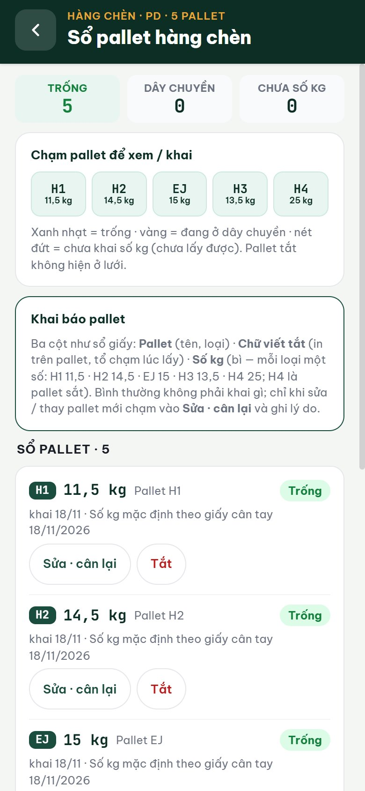
cuộn trong khung để xem hết màn · ảnh chụp 18/11/2026
Nhà máy có một số loại pallet dành riêng cho hàng chèn; mỗi mã trong sổ là một LOẠI, gồm nhiều pallet thật cùng số kg (không phải một chiếc pallet duy nhất). Sổ pallet ghi ba cột như sổ giấy: Pallet (tên, loại), Chữ viết tắt (mã loại, in trên pallet) và Số kg (bì pallet rỗng). Mỗi loại có một số kg riêng, ghi theo giấy cân tay của kho (18/11/2026). Một loại dùng được cho nhiều lần chèn cùng lúc — một ca chèn 20 lần, loại nào cũng chạm lại được:
Chữ viết tắt
Pallet
Số kg (bì)
H1
Pallet H1
11,5
H2
Pallet H2
14,5
EJ
Pallet EJ
15
H3
Pallet H3
13,5
H4
Pallet sắt H4
25
Tổ ép chỉ chạm tên pallet rồi đọc cân, máy tự trừ đúng số kg của pallet đó. Không cân pallet rỗng cuối ca, không gõ bì tay, không phải khai gì trước.
Mở: trang chính → thẻ Sổ pallet (lưới 5 ô nhỏ) → Xem, hoặc gõ huyanhrubber.vn/m/kho/chen/so-pallet. Máy tính: Hàng chèn → Sổ pallet.
Lưới trên cùng: mỗi ô là một loại pallet, loại nào cũng chạm lấy được nhiều lần; nét đứt = chưa khai số kg (chỉ gặp ở loại mới chưa có bì — chưa lấy được). Loại tắt không hiện. Trong danh sách bên dưới, mỗi loại ghi số phiếu đang mở dùng loại đó.
5 pallet đã có sẵn số kg — bình thường không phải khai gì. Chỉ khi sửa hoặc thay pallet, thủ kho hoặc Ban Giám đốc mới chạm pallet → Sửa · cân lại → gõ số kg mới + lý do → Ghi. Máy giữ lịch sử từng lần; pallet đã cân lại ra số khác số trên mang nhãn lệch mặc định.
Pallet hỏng: bấm Tắt (có lý do), sửa xong Bật lại là dùng ngay. Nhà máy chưa có sổ (Tân Lâm, Lào): bấm Nạp 5 loại mặc định là có đủ H1, H2, EJ, H3, H4 với số kg như bảng trên. Pallet khác ngoài 5 loại: bấm Thêm dải pallet (ví dụ HC1→HC5, gõ số kg chung). Không xoá pallet vì phiếu cũ còn tham chiếu.
5 loại pallet, mỗi loại một số kg (từ 18/11/2026): H1 11,5 · H2 14,5 · EJ 15 · H3 13,5 · H4 25 kg (pallet sắt) — thay cho "27,5 kg cho mọi pallet" của 17/11. Mỗi loại gồm nhiều pallet thật, không giới hạn số lần chèn trong ca. Sửa · cân lại chỉ dùng khi đổi số kg của cả loại.
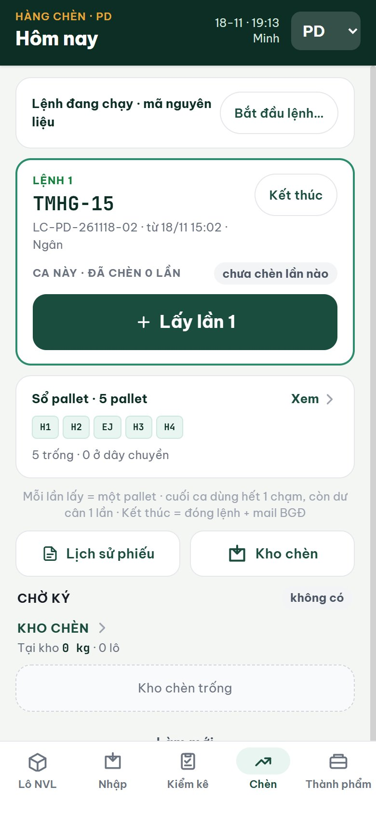
Trên trang chính, thẻ Sổ pallet · 5 pallet nằm ngay dưới các thẻ lệnh: mỗi ô là một loại pallet (ô có viền vàng là loại đang có phiếu mở). Dòng dưới ghi tổng số phiếu đang dùng pallet. Từng lần chèn L1, L2… trên thẻ lệnh cũng hiện viên tên pallet (ví dụ H2) và phép trừ cả pallet − bì = kg hàng đã chốt lúc lấy.
Tem dán pallet: in chữ viết tắt to kèm mã QR nội dung là chính chữ viết tắt (H1, H2, EJ, H3, H4). Quét ở màn Lấy (nút Quét tem), hoặc nút máy ảnh của tab Lô NVL — quét tem pallet sẽ nhảy sang Sổ pallet. Mẫu tem in sẽ bổ sung sau.
Bước 1 · Nguồn và số lô
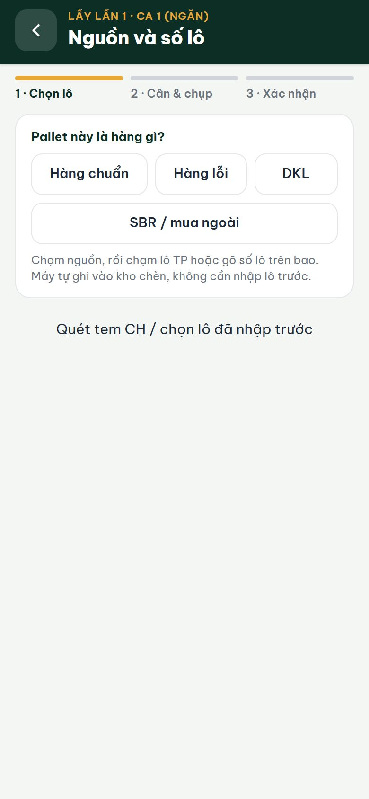
Chạm nguồn: Hàng chuẩn, Hàng lỗi, DKL (dính kim loại) hoặc SBR / mua ngoài.
Hàng từ kho thành phẩm: chạm lô TP còn tồn, số lô tự điền, bành trừ thẳng lô TP. SBR hoặc hàng ghi số lô trên bao: gõ số lô → Dùng. Chưa có lô thì máy tự tạo, nhập bằng lấy.
DKL: hàng chỉ được đem vào chèn sau khi đã xử lý kim loại ở khâu trước, nên máy mặc định là đã xử lý — không tick, không hỏi lại, lấy như hàng khác.
Lô đã nhập trước ở Kho chèn: bấm Quét tem CH / chọn lô đã nhập trước rồi quét tem hoặc chạm lô.
Thẻ xám trên cùng nhắc các lần đã chèn trong ca và lần đang lấy là lần mấy. Số lần đếm theo lệnh.
Bước 2 · Cân và chụp
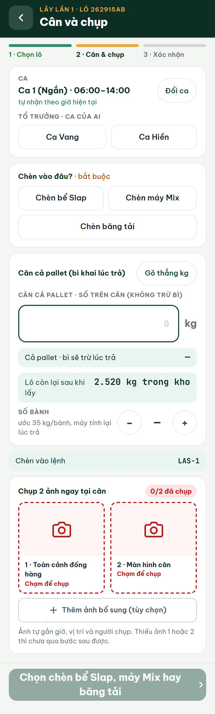
cuộn trong khung để xem hết màn · ảnh chụp trước 10/11, nay khối "Pallet nào?" nằm ngay trên ô cân
Ca và tổ: máy tự nhận, sai thì Đổi ca; chạm tổ trưởng Ca Vang hoặc Ca Hiền.
Chèn vào đâu (bắt buộc): Chèn bể Slap, Chèn máy Mix hoặc Chèn băng tải. Máy nhớ lựa chọn lần trước.
Loại pallet nào?: chạm ô có chữ viết tắt ghi trên pallet (H1, H2, EJ, H3, H4; trên nút có ghi sẵn số kg) hoặc bấm Quét tem. Loại nào cũng chạm được nhiều lần trong ca, kể cả khi các lần trước chưa trả; ô nét đứt là chưa khai số kg, báo thủ kho. Dòng xanh dưới lưới hiện bì của loại vừa chọn.
Số đọc trên cân (lần cân duy nhất lúc lấy): gõ đúng số trên màn hình cân, cả pallet, không trừ gì. Máy hiện ngay phép trừ, ví dụ 612,0 − bì H2 14,5 = 597,5 kg; đó là kg lấy, chốt luôn. Băng tải thì không chọn pallet, gõ số bành, máy nhân kg mỗi bành. Hàng cân rời không pallet: bấm Không pallet · gõ kg.
Số bành: máy ước trên kg hàng đã trừ bì (35 kg/bành), đếm khác thì bấm −+. Ô xám bên dưới báo lô còn lại bao nhiêu trong kho.
Chèn vào lệnh: một lệnh thì tự gắn; nhiều lệnh song song thì chạm chip lệnh.
Chụp 2 ảnh ngay tại cân: Toàn cảnh đống hàng và Màn hình cân. Ảnh tự nén, tự gắn giờ và người chụp. Thiếu ảnh thì nút Tiếp tục chưa sáng.
Bấm Tiếp tục → màn Xem lại rồi ghi hiện số kg to, lô, vị trí, mã, ca, ảnh → bấm Ghi lần n · … kg. Màn xanh "Đã ghi lần n" hiện ra, bấm Lấy lần n+1 cho pallet tiếp theo hoặc Về trang chính.
5 · Trả cuối ca: dùng hết hay còn dư
Ai làm:QS — ghi trả và ký bước 1 một chạm.
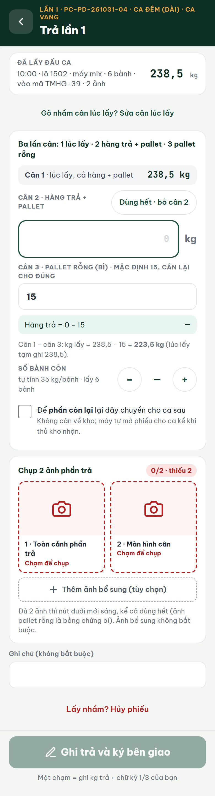
ảnh màn cũ (phiếu không pallet); phiếu có pallet hiện hai nút Dùng hết / Còn dư như mô tả bên phải, ảnh sẽ thay sau lần chèn thật đầu tiên
Trang chính, dòng L1 · Trả L1 · dùng hết hay còn dư. Mỗi lần lấy có nút trả riêng. Bì của pallet đã có trong Sổ pallet nên chỉ còn một câu hỏi: pallet về thế nào?
Dùng hết: một chạm. Trả 0 kg, tiêu hao = kg lấy, không phải cân gì. Chụp 1 ảnh toàn cảnh pallet rỗng.
Còn dư: đặt pallet còn hàng lên cân, gõ đúng số trên cân (hàng còn + pallet). Máy trừ bì: 263,0 − bì H2 14,5 = trả 248,5 kg, tiêu hao = kg lấy − kg trả. Chụp 2 ảnh phần trả.
Số bành còn: máy tự tính, đếm khác thì bấm −+.
Phần dư để lại dây chuyền cho ca sau: tick Để … lại dây chuyền cho ca sau. Máy tự mở phiếu cho ca kế (cùng loại pallet, cùng bì) khi thủ kho nhận.
Bấm Ghi trả và ký bên giao: một chạm vừa ghi kg trả vừa ký bước 1. Lấy nhầm thì bấm Lấy nhầm? Hủy phiếu.
Gõ nhầm cân lúc lấy? Trên màn này có nút Sửa cân lúc lấy, dùng được tới khi QS ký xong bước 1; máy trừ lại bì của pallet đó. Thấy bì sai thì báo thủ kho cân lại trong Sổ pallet; phiếu đang mở vẫn giữ bì lúc lấy.
Phiếu không chọn pallet (hàng cân rời, phiếu lập trước 10/11; chèn băng tải thì không cân, tính theo bành): màn trả giữ cách cũ, cân tối đa ba lần — cân 1 lúc lấy, cân 2 hàng trả + pallet (dùng hết thì bỏ), cân 3 pallet rỗng để khai bì (ô cân 3 máy điền sẵn 27,5 kg chỉ là số TẠM của đường cũ — hãy cân pallet rỗng thật rồi gõ số đó) — và 2 ảnh kể cả dùng hết. Muốn chỉ cân 1–2 lần: chọn pallet trong Sổ pallet ngay lúc lấy.
6 · Ký ba bước
Ai làm: mỗi người ký bước của mình: QS bước 1 → QC bước 2 → thủ kho bước 3.
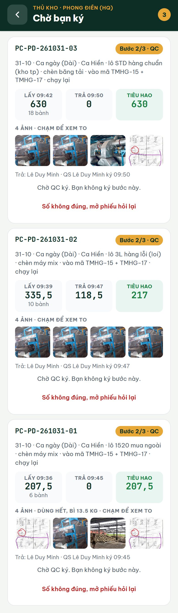
cuộn trong khung để xem hết màn
Trang chính → Chờ ký. Mỗi người chỉ thấy nút của bước mình. Mỗi phiếu hiện ba ô số Lấy / Trả / Tiêu hao, các ảnh thu nhỏ (chạm xem to — phiếu dùng hết với pallet chỉ có 3 ảnh: 2 lúc lấy + 1 toàn cảnh lúc trả), ai đã ký lúc nào.
QS ký khai báo: thường đã ký ngay lúc trả; chưa thì ký ở đây.
QC duyệt: soát số và ảnh, bấm nút duyệt. Thấy số sai thì Mở phiếu · sửa kg trả trước khi ký.
Thủ kho nhận: bấm nhận. Sau bước này kho chèn trừ tiêu hao, sổ ca ép bành tự điền dòng CHÈN, số liệu gom vào mã gốc.
Nhiều phiếu một ca: thẻ đầu trang Ký tất cả N phiếu · ngày · ca ký một chạm cho cả ca. Phiếu thiếu ảnh bắt buộc bị bỏ qua và nhắc riêng, phải chụp bổ sung rồi mới ký được.
7 · Kho chèn và nhập lô
Ai làm: nhập lô, hủy lô: QS · kiểm kê: QS hoặc thủ kho · xem: mọi người.
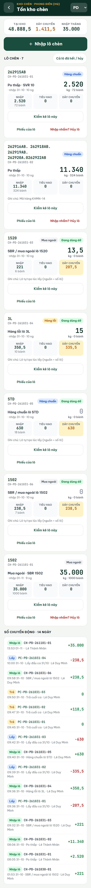
cuộn trong khung để xem hết màn
Trang chính → Kho chèn. Ba ô số: Tại kho, Dây chuyền, Nhập tháng. Mỗi lô là một thẻ: số lô, mã CH, nguồn, Po / Mooney / PRI, tồn kg và bành, ba ô Nhập / Tiêu hao / Dây chuyền.
Kiểm kê lô này: gõ kg cân thực, lệch thì chọn lý do → Ghi kiểm kê.
Lô DKL lấy chèn được ngay như lô khác (máy mặc định đã xử lý kim loại, không còn nút "mở lấy").
Lô chưa có số lô: gõ số lô trên bao → Gán.
Nhập nhầm? Hủy lô: chỉ khi lô chưa có phiếu lấy nào.
Phiếu của lô: xem mọi lần lấy từ lô đó. Cuối trang là Sổ chuyển động 14 ngày, chạm mã phiếu để mở.
Bình thường không cần nhập kho chèn trước: lúc lấy chạm nguồn và số lô là máy tự tạo lô. Chỉ nhập trước khi muốn ghi tồn sẵn.
Nhập lô chèn (khi cần nhập trước)
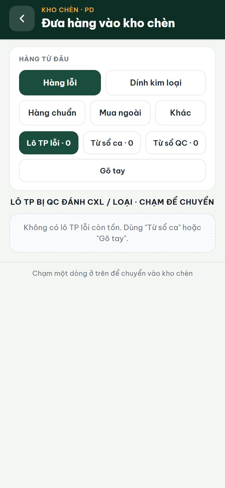
Kho chèn → + Nhập lô chèn, chọn nguồn rồi làm theo bảng.
Nguồn
Cách làm
Số lô
Lô thành phẩm bị QC đánh CXL / Loại
Hàng lỗi (hoặc DKL) → tab Lô TP lỗi → chạm lô → số bành → Chuyển
tự lấy số lô TP
Dòng LOI / DKL trên sổ ca đã ký
tab Từ sổ ca → chạm dòng → kg
gõ số lô trên bao
Sổ QC hàng không đạt
tab Từ sổ QC → chạm dòng → kg
tự lấy, sửa được
Hàng chuẩn lấy từ kho TP để nâng chỉ số
Hàng chuẩn → chạm chủng loại → kg → chọn ca
gõ, có gợi ý lô đạt còn tồn
SBR 1502 mua ngoài, hàng khác
Mua ngoài / Khác → số lô → số bành (máy ra kg) hoặc gõ kg
gõ số lô nhà cung cấp
Không có số lô thì không nhập được.
8 · Lịch sử phiếu và sửa khi sai
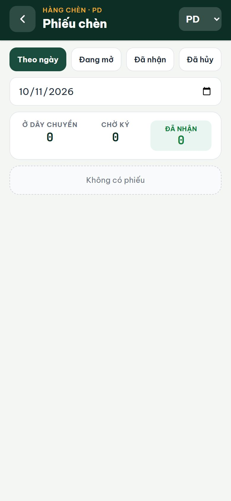
Trang chính → Lịch sử phiếu. Lọc Theo ngày (chọn ngày), Đang mở, Đã nhận, Đã hủy. Ba ô số: Ở dây chuyền, Chờ ký, Đã nhận. Chạm thẻ để mở phiếu.
Sai gì
Làm gì
Được tới khi
Gõ nhầm số cân hoặc số bành lúc lấy
Mở phiếu → Sửa cân lúc lấy
trước khi QS ký xong bước 1
Nhầm kg trả
Mở phiếu → Sửa kg trả
trước khi QC duyệt
Nhầm mã gốc, lệnh hoặc bể / máy
Mở phiếu → Đổi mã
trước khi thủ kho nhận
Khai nhầm lệnh (thiếu hoặc thừa mã)
Kết thúc lệnh rồi Bắt đầu lệnh đúng, hoặc Bắt đầu mã còn thiếu → Gộp vào lệnh đang chạy
bất kỳ lúc nào
Lấy nhầm lô
Mở phiếu → Lấy nhầm? Hủy phiếu, kg trả về tồn kho chèn
trước khi thủ kho nhận
Tồn kho chèn lệch cân thực
Kho chèn → Kiểm kê lô này
bất kỳ lúc nào
Lô nhập nhầm
Kho chèn → Nhập nhầm? Hủy lô
lô chưa có phiếu lấy
9 · Kết thúc lệnh, tổng kết, mail Ban Giám đốc
Ai làm:QS hoặc thủ kho; mail Ban Giám đốc tự gửi.
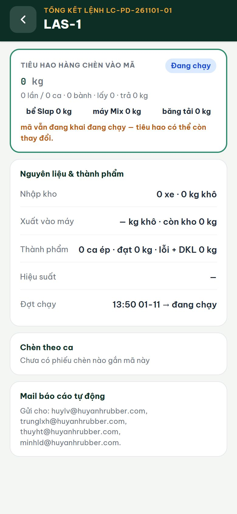
Khi lệnh chạy xong (hết nguyên liệu vào máy, phiếu chèn cuối đã trả): trang chính, thẻ lệnh → Kết thúc → xác nhận Kết thúc và gửi mail BGĐ.
Máy mở ngay trang Tổng kết lệnh: tiêu hao chèn (kg, phần trăm hàng vào máy, bể Slap / máy Mix, theo nguồn, theo lô chèn, theo ca), nguyên liệu nhập kho / xuất vào máy / còn kho, thành phẩm và hiệu suất.
Mail "Báo cáo chèn hàng theo mã sản xuất …" tự gửi cho Ban Giám đốc kèm ảnh từng lần chèn, không hỏi thêm.
Phiếu ca, phiếu chèn và lô thành phẩm sẽ không tự gắn lệnh đã kết thúc nữa. Xem lại tổng kết qua trang chính hoặc đường dẫn của lệnh.
10 · Trên máy tính Kho nguyên liệu → Hàng chèn
Bản máy tính dành cho QC, thủ kho và Ban Giám đốc theo dõi; thao tác ngoài xưởng làm trên điện thoại. Bốn tab trên cùng: Hàng chèn (lệnh đang chạy, phiếu theo mã, phiếu đang mở, phiếu chưa gắn mã), Phiếu theo ca, Kho chèn, Phân công. Nút Bản điện thoại ở góc phải mở bản mobile.
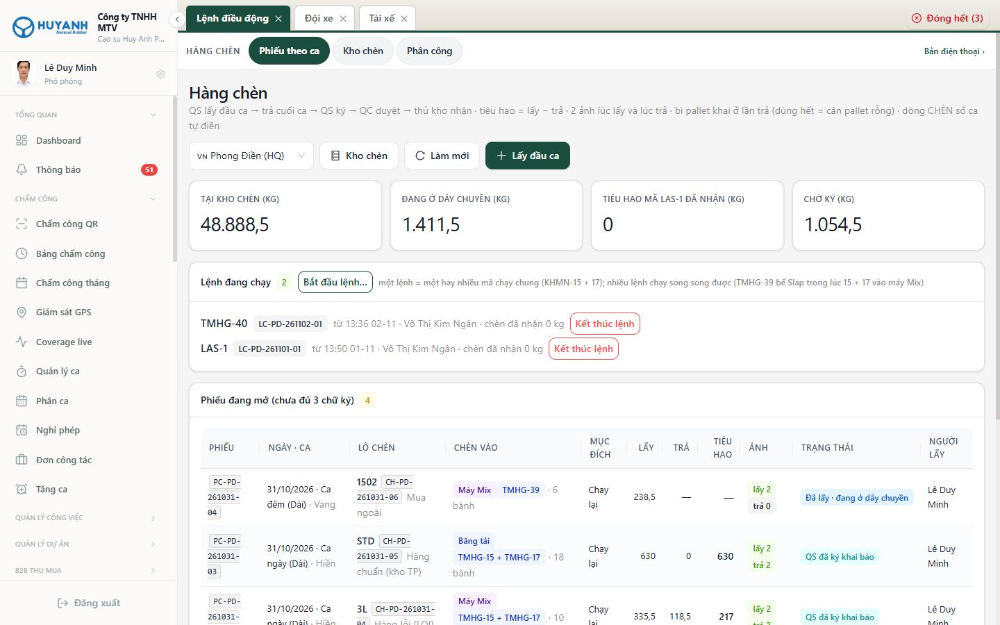
Phân công ba bước (chỉ Ban Giám đốc)
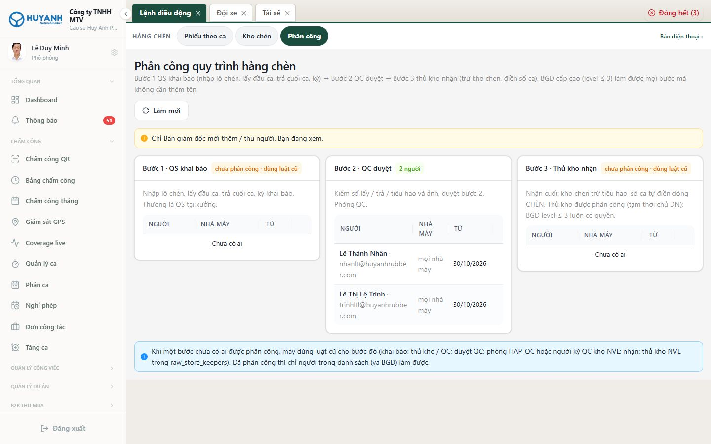
Ảnh chụp 18/11/2026, đã ẩn địa chỉ email. Bước 1: 4 người ở Phong Điền · Bước 2: 2 người, mọi nhà máy · Bước 3: chưa phân công (dùng luật cũ).
Gõ tên → chọn nhà máy → Thêm vào cột của bước; Thu để bỏ. Bước chưa có ai thì máy dùng luật cũ (khai báo: thủ kho / QC; duyệt: phòng QC; nhận: thủ kho NVL). Đã phân công thì chỉ người trong danh sách và Ban Giám đốc làm được — kể cả ở nhà máy khác, nên mỗi nhà máy dùng hàng chèn phải có người của mình ở bước 1.
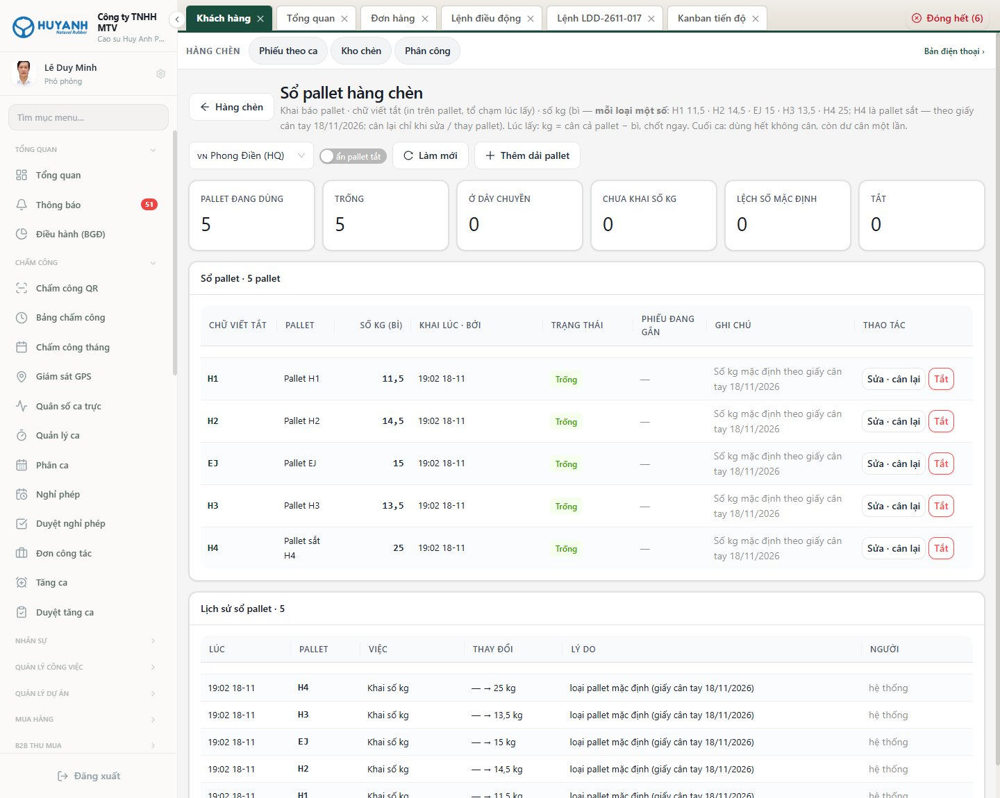
Sổ pallet trên máy tính (nút Sổ pallet ở đầu trang Hàng chèn, hoặc /wms/chen/pallet): bảng ba cột Chữ viết tắt · Pallet · Số kg, cột Khai lúc · bởi, trạng thái, phiếu đang gắn, nút Sửa · cân lại, Tắt / Bật lại, nút Thêm dải pallet (tạo HCn→HCm cùng một số kg), nút Nạp 5 loại mặc định (chỉ hiện khi sổ của nhà máy đó thiếu). Bảng Lịch sử sổ pallet ghi mọi lần khai, cân lại, đổi chữ viết tắt, tắt, bật.
11 · Quy ước nhanh và lỗi thường gặp
Một lệnh = một hay nhiều mã chạy chung; nhiều lệnh chạy song song được. Ba vị trí chèn: bể Slap, máy Mix (chạm pallet, cân cả pallet, máy trừ bì từ Sổ pallet), băng tải (theo bành, không pallet).
Sổ pallet: khai báo pallet · chữ viết tắt · số kg — mỗi pallet một số kg riêng (H1 11,5 · H2 14,5 · EJ 15 · H3 13,5 · H4 25 sắt); cân lại chỉ khi sửa / thay pallet (ghi lý do — máy gắn nhãn "lệch mặc định"). Chỉ thủ kho và Ban Giám đốc ghi sổ.
Mỗi phiếu = một pallet = một lần chèn; số lần đếm theo ca, gom theo lệnh.
Bành 35 kg hoặc cỡ bành của chủng loại, máy tự quy; chỉ chỉnh khi đếm khác.
Số lần cân: có pallet thì cân 1 lần lúc lấy, cuối ca dùng hết không cân / còn dư cân 1 lần — tổng 1 hoặc 2 lần; không cân pallet rỗng.
Bì pallet: chạm pallet lúc lấy → máy trừ đúng số kg của pallet đó từ Sổ pallet và chốt ngay kg lấy. Chỉ phiếu không chọn pallet (băng tải, cân rời, phiếu cũ) mới khai bì lúc trả và tính lại kg lấy.
2 ảnh lúc lấy luôn bắt buộc. Lúc trả: dùng hết với pallet chỉ cần 1 ảnh toàn cảnh; còn dư hoặc phiếu không pallet cần 2 ảnh.
Kho chèn, sổ ca, gom theo mã chỉ thay đổi ở bước thủ kho nhận.
Kho chèn không chặn lấy quá tồn với SBR và số lô gõ tay (máy ghi nhập thêm); chỉ hàng từ lô TP chặn theo bành còn lại.
Màn hình báo
Nghĩa là gì, làm gì
"Tài khoản này chưa được phân công khai báo hàng chèn (QS)"
Bạn chưa có tên ở bước 1. Nhờ Ban Giám đốc thêm ở máy tính → Hàng chèn → Phân công.
"Chưa khai lệnh đang chạy"
Vẫn lấy được, phiếu nằm ở thẻ "Chưa gắn lệnh". Nên bấm Bắt đầu lệnh… trước cho máy tự gắn.
Nút Tiếp tục hoặc Ghi trả không sáng
Thiếu ảnh bắt buộc, chưa chọn vị trí chèn, chưa gõ số lô hoặc chưa chọn lệnh. Đọc chữ trên nút, máy ghi rõ thiếu gì.
"Thiếu ảnh bắt buộc, mở phiếu để chụp bổ sung"
Ở Chờ ký, phiếu thiếu ảnh không ký được. Mở phiếu, chụp bổ sung rồi ký.
Ca trên đầu trang không đúng
Máy nhận ca theo chấm công hoặc giờ. Lúc lấy hoặc trả bấm "Đổi ca" và chọn đúng ca.
"Lấy nhiều hơn tồn lô TP"
Số cân vượt số bành lô thành phẩm còn lại. Kiểm lại lô hoặc số cân.